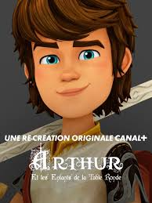

Après des nuits d’angoisse et de doutes, Arthur se rendit seul dans la forêt enchantée. Là, sous la lune argentée, il découvrit une clairière illuminée par une lumière dorée.
Au centre trônait une épée plantée dans une pierre, scintillant comme si elle respirait. Une voix ancienne résonna : « Celui qui retirera cette lame est le vrai roi de Canlot. »
Arthur, le cœur battant, posa sa main sur le manche… Et l’épée glissa doucement, comme si elle l’attendait depuis toujours.
Dès cet instant, les Enfants de la Table Ronde sentirent un changement. Le destin d’Arthur venait de basculer.
La guerre approche… Le roi Maux de Tintagel prépare son armée.